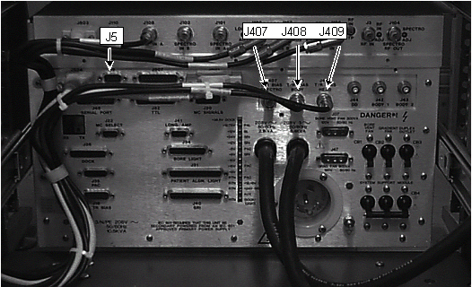
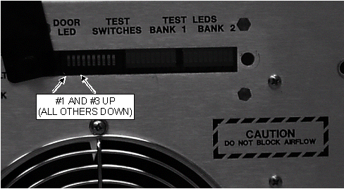
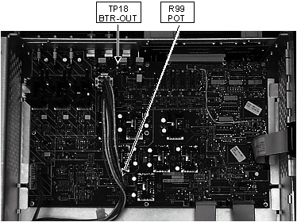
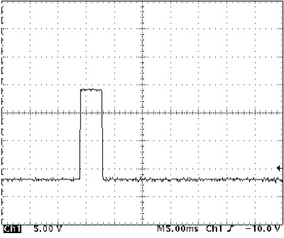
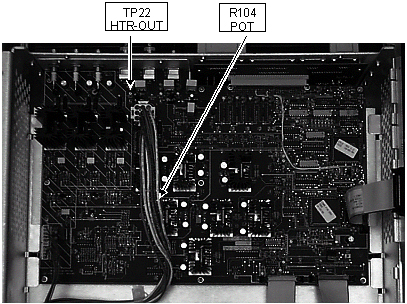
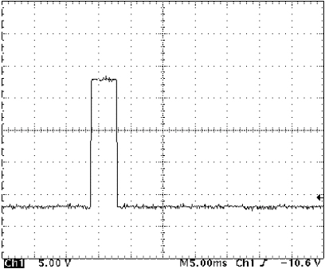

Operating Documentation
Direction 5440001-3, Rev# 6
Signa HDxt Service Methods
Module Version 1.0, Version Date 5/3/07
Operating Documentation |
| Required Persons | Preliminary Reqs | Procedure | Finalization |
|---|---|---|---|
| 1 |
| NOTE: | The TR Voltages are factory set and should not require adjustment. This section was included for troubleshooting purposes and is not intended to be performed as a normal part of the calibration process. |
| NOTE: | FAILURE TO PROPERLY CONFIGURE JUMPER JP1 ON THE HIGH VOLTAGE BOARD COULD POSSIBLY RESULT IN SNR DEGRADATION AND DYNAMIC DISABLE OR DIRECT DRIVE FAILURES. |
| Item | Qty | Effectivity | Part# | Manufacturer | |
|---|---|---|---|---|---|
| 100 MHz Scope | 1 | - | 46-183029P61 | - | |
| Digital Multimeter (DMM) | 1 | - | 46-194427P49 | - | |
| Pot Tweaker | 1 | - | 46-194427P361 | - | |
| Condition | Reference | Effectivity |
|---|---|---|
The SSM High Voltage (HV) Board jumper, JP1, must be set to either the 1000V position for 1.5T or 500V position for 1.0T systems. This high voltage bias is for the Body 1 and Body 2 Dynamic Disable Circuits in the RF body coil and the Direct Drive Circuitry (DD) in the body hybrid splitter. Jumper JP1 should come preset for all new installations and should not require changing. If the HV board ever fails, however, and is replaced, the position of this jumper on the new board should be checked before it is installed. | - | - |
Extend the SSM chassis. Allow sufficient cable slack to avoid pinching or straining. Open the lids.
Verify cables (and their respective loads) are properly connected to J409 (Head TR) and J408 (Body TR); see Illustration 1.
Illustration 1: CABLES LOCATIONS ON SSM

At the SSM disconnect J5 (UNBLK EN); see Illustration 1.
Configure the front panel DIP switches as shown in Illustration 2. This should generate a periodic unblank pulse train. Refer to Table 3-1 for the test switch and test LED definitions.
| NOTE: | Order of DIP switch placement is important, otherwise, system will not recognize changes. Place DIP Switch #3 in the UP position first and then Switch #1 in the UP position. Entering test mode may cause RF Amp fault; this is normal and may be disregarded. |
Illustration 2: DIP SWITCH CONFIGURATION

Connect an oscilloscope to monitor the Body TR at TP18 (BTR-OUT); see Illustration 3. Adjust R99 until the positive going portion of the Body TR pulse is 4.00 VDC as referenced to ground level. See Illustration 4. The negative portion (not adjustable) will measure approximately -12.25 VDC as referenced to ground.
Illustration 3: TR VOLTAGE ADJUSTMENT/BODY TR TEST POINT

Illustration 4: BODY TR SCOPE WAVEFORM SEEN AT TP18 (BTR-OUT)

Connect an oscilloscope to monitor the Head TR at TP22 (HTR-OUT); see Illustration 5. Adjust R104 until the positive going portion of the Head TR pulse is 8.00 VDC as referenced to ground level. See Illustration 6. The negative portion (not adjustable) will measure approximately -12.25 VDC as referenced to ground.
Illustration 5: TR VOLTAGE ADJUSTMENT/HEAD TR TEST POINT

Illustration 6: HEAD TR SCOPE WAVEFORM SEEN AT TP22 (HTR-OUT)

| NOTE: | For Spectro TR adjustments please refer to the appropriate . |
Place DIP switch #3 and #1 (respectively) in the Down position. Place all other switches in the Down position.
Reconnect J5 (UNBLK EN) at the rear of the SSM.
If not proceeding to the next section, refer to System Restoration.